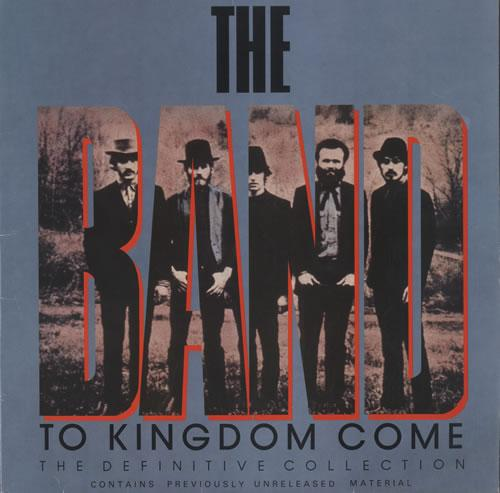

Christmas Must Be Tonight
18 Dec 2020 · 3 min read
topics: Christmascultural evolutionwonder

I’ve always loved this Christmas song from The Band.
There’s nothing terribly fancy or ambitious about it. Robbie Robertson just recounts the story of Christmas, of the birth of Jesus, in a series of familiar scenes, using simple and straightforward language.
Come down to the manger, see the little stranger,
Wrapped in swaddling clothes, the prince of peace.
Wheels start turning, torches start burning,
And the old wise men journey from the East.How a little baby boy bring the people so much joy.
Son of a carpenter. Mary carried the light.
This must be Christmas, must be tonight.A shepherd on a hillside, where over my flock I bide,
Oh a cold winter night a band of angels sing.
In a dream I heard a voice say "fear not, come rejoice.
It’s the end of the beginning, praise the newborn king."How the little baby boy bring the people so much joy.
Son of a carpenter. Mary carried the light.
This must be Christmas, must be tonight.I saw it with my own eyes, written up in the skies.
But why a simple herdsmen such as I?
And then it came to pass, he was born at last,
Right below the star that shines on high.How a little baby boy bring the people so much joy.
Son of a carpenter. Mary carried the light.
This must be Christmas, must be tonight.
Of course, it’s a pretty impressive story. Robertson starts with the birth of a baby, and this is a pretty wondrous event, no matter what the time or place or who the parents. But this baby is destined to be the prince of peace, even though he is the son of a carpenter, and is born in a manger. The newborn is honored by three wise men on the night of his birth, who have found him by following the brightest star in the sky. And a simple shepherd is visited by angels who tell him of the child’s birth.
All of this gets reduced to its most important and basic elements in the chorus. The singer starts by wondering “How a little baby boy [could] bring the people so much joy.” Then he refers to the baby’s parents, singing “Son of a carpenter. Mary carried the light.” And then he finishes with the odd phrasing of the final line, “This must be Christmas, must be tonight.”
The Band’s delivery of the song is impeccable. It starts with a simple acoustic guitar, soon joined by a burbling electric bass, and then laid-back drums. Rick Danko’s delicate, heartfelt lead vocal is beautiful, with other voices joining in at times, and Garth Hudson adding swirling organ runs in the background. The overall tone is quiet and respectful, as if trying to keep the focus on the story being told, and not on those singing or playing it.
This is a classic example of a recording by The Band in which the whole is much more than the sum of the parts, an example of a work of art in which the individual pieces are not crafted to each stand out on their own, but to cunningly join together so seamlessly that they form something larger. The Band was a bit past its prime by the time it released the album Islands, but this song from that collection certainly ranks among their best work.
Next: “Have Yourself a Merry Little Christmas”
Or see the complete list of Christmas Favorites from The Practical Utopian.
Thanks for reading! You can also generally follow my work on Medium and Buttondown.
If you’d like a convenient short URL to link to this piece, you can use pract.org/cmbt.html. Or feel free to simply share this piece using one of the social media buttons below!